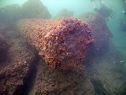

Александрійський маяк або Фароський маяк — одне з Семи чудес стародавнього світу, що знаходилося на острові Фарос (сьогодні мис у межах міста Александрія в Єгипті). Завдяки своїй висоті й системі вогнів, маяк гарантував морякам безпечне плавання у Велику гавань Александрії. Упродовж всього існування маяк був третьою найвищою спорудою на Землі (після пірамід Хеопса та Хафри).
Після завоювання Єгипту у 332 році до н. е. Александр Македонський вирішив заснувати там нову столицю, що була названа на його честь Александрією.
Місце для нового міста обиралося ретельно. Замість того, щоб заснувати його у дельті Нілу, було обрано район, розташований за двадцять миль на захід, щоб мул і бруд, принесені річкою, не засмічували міську гавань. Південна околиця міста закінчувалася озером Мареотіс. Після того, як був побудований канал між озером і Нілом, місто мало дві гавані: одна для руху по Нілу, інша для середземноморської морської торгівлі. Александр помер близько 323 року до н.е, і будівництво міста завершувалося Птолемеєм II. За його правління Александрія досягла багатства і процвітання.
У міру розвитку судноплавства й морської торгівлі все гостріше відчувалася потреба у маяку, який серед підводних скель і мілин вказував би суднам безпечний шлях в Александрійську гавань. Тому у 290 році до н. е. на східному краї острова Фарос, що лежав у морі на відстані 7 стадій (1290 м), правитель Єгипту Птолемей I наказав побудувати величезний маяк. Творцем цього шедевру інженерного та архітектурного мистецтва вважається Сострат Кнідський. Роботи тривали трохи більше 20 років, і в підсумку Александрійський маяк став першою в світі будовою подібного типу і найвищою будівлею античного світу, крім пірамід Гізи. Система сигнальних вогнів на маяку з'явилася лише в I столітті до н. е.
Цей маяк був і фортецею-форпостом Александрії, і пунктом спостереження, оскільки з його верхівки спостерігали за флотом ворогів, який наближався до міста. На башті розміщувалися технічні пристрої: флюгери, годинники, астрономічні прилади тощо. Сострат Кнідський задля увіковічнення самого себе, порушив указ Птолемея: на підставі маяка написав: «Сострат, син Декстифона з Книду, присвятив богам-рятівникам заради мореплавців». Напис він прикрив шаром штукатурки, на якій вирізав ім'я Птолемея Сотера. Сострат сподівався, що в майбутньому, після його смерті, коли штукатурка обвалиться, всі знатимуть, хто насправді збудував маяк.
Фароський маяк висвітлював шлях мореплавцям протягом більше 1500 років. Але потужні підземні поштовхи в 365, 956 і 1303 роках н. е. сильно пошкодили будівлю, а потужний землетрус 1326-го року остаточно зруйнував цю одну з найбільших архітектурних споруд світу.
У середні віки залишки подіуму Александрійського маяка були вбудовані в турецьку фортецю Кайтбей, що потім була перетворена на єгипетський військовий форт.
У 1994 році останки Александрійського маяка були виявлені археологами, а згодом образ будівлі був відновлений за допомогою комп'ютерного моделювання. Проте дістатися до безпосередніх залишків маяка неможливо навіть археологам унаслідок їх перебування під пізнішими спорудами.
Висота маяка була 120-137 м, а його світло було видно на відстані 60 км (за іншими свідченнями, до 100 км). Нижня частина являла собою чотиригранну призму 60-метрової висоти з квадратною основою, довжина сторони якої становила 30 м. У внутрішніх приміщеннях зберігався різний інвентар, а плоский дах, прикрашений по кутках величезними статуями Тритона, служив основою середньої частини. Це була 40-метрова восьмигранна призма-вежа, облицьована білим мармуром. Верхня (третя) частина маяка була споруджена у формі циліндричної колонади — 8 колон несли купол, увінчаний 7-метровою бронзовою фігурою повелителя морів Посейдона. Джерелом світла служило велике багаття, що постійно підтримувалося. Яким чином досягалася яскравість і дальність свічення досі не встановлено. За однією з версій, цей ефект досягався за допомогою величезних дзеркал з полірованої бронзи або скла. За іншою — завдяки використанню прозорих шліфованих каменів-лінз.
Згідно з історичними записами, маяк також славився оздобленням споруди у вигляді високих жіночих фігур, зроблених із позолоченої бронзи. За переказами, це були не просто статуї, а автомати, що час від часу рухалися завдяки схованим усередині механізмам. Одні показували силу вітру і морських хвиль, пересуваючи великі золоті стрілки на величезних синіх циферблатах. Інші, повертаючись, вказували напрямок вітру або слідували руками за рухом Сонця і Місяця. Жінки-автомати стояли також біля великого водяного годинника — клепсидри та били у дзвони. А в туман і негоду вони сурмили у зігнутий золотий ріг, попереджаючи мореплавців про небезпечну близькість мілин і підводні скелі.
Зв'язок назви маяка з його з функцією виявився настільки міцним, що слово «Фарос» (грец. Φάρος) стало коренем слова «маяк» у французькій, італійській, іспанській і румунській мовах.
Припускають, що від грец. Φάρος походить і рідковживане українське слово «парус» («промінь»).